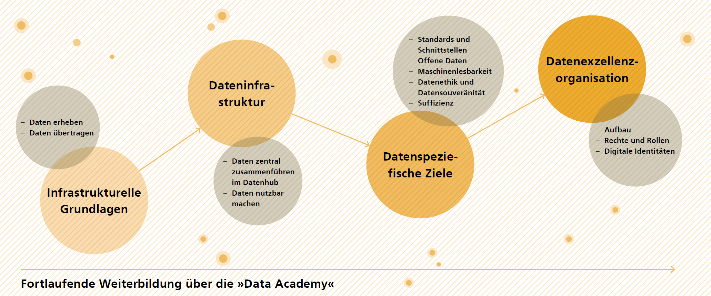
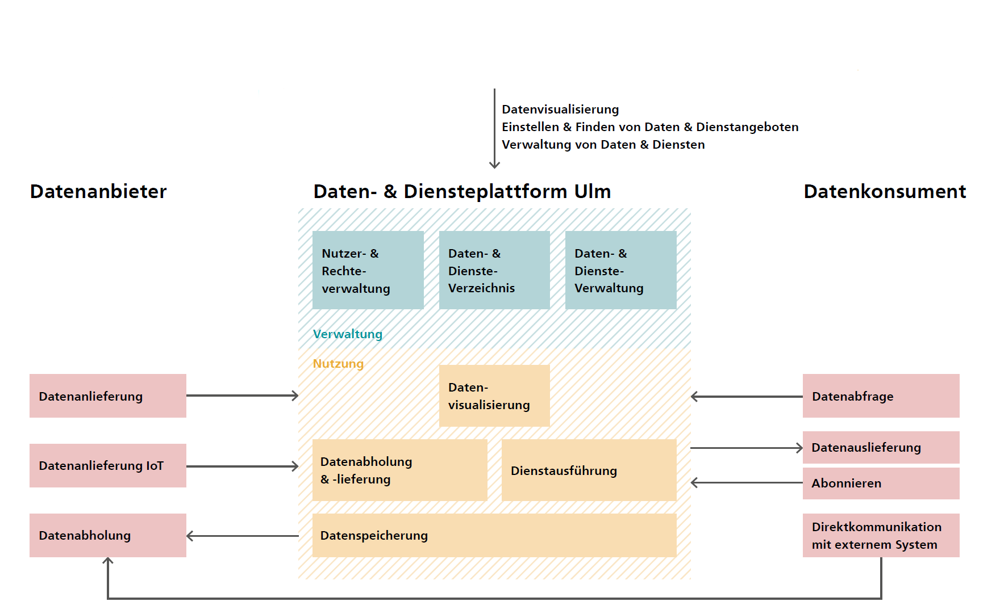
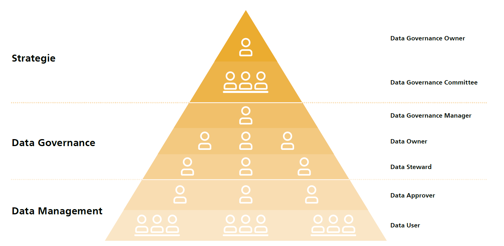
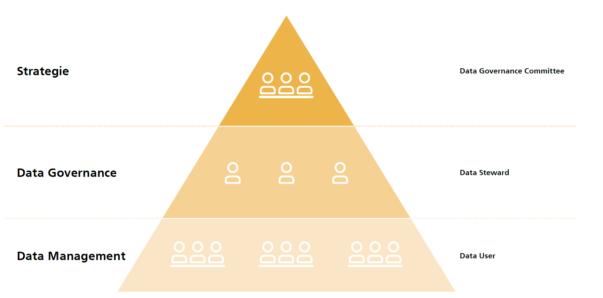

Technisches Grundlagenkapitel¶
Um die Smart City Strategie erfolgreich umzusetzen und die gesteckten Ziele zu erreichen ist es notwendig, technische Grundlagen zu schaffen, die eine stabile Basis der fortwährenden Entwicklung sicherstellen. Bereits während der Strategiephase wurden neue Herausforderungen deutlich, die der technologische Wandel mit sich bringt. Zusätzlich zeigt die Ausgestaltung der Handlungsfelder den Bedarf auf, die technische Infrastruktur für die nächsten Jahre zu aktualisieren. Die technischen Grundlagen bilden die notwendige Basis, Maßnahmen erfolgreich umzusetzen und letztendlich die Zielerreichung sicherzustellen.
Digitale Infrastrukturen sollen in Zukunft grundsätzlich als Teil der Daseinsvorsorge begriffen werden. Daraus folgt, dass sie im Besitz der öffentlichen Hand sein sollten. Mit der Nutzung entsprechender Netze (Mobilfunk, Kabel, Glasfaser usw.) können dann Private beauftragt werden. Auch bei der Auswahl von digitalen Produkten und Dienstleistungen sollten die Nachhaltigkeit und digitale Verantwortlichkeit im Besonderen berücksichtigt werden. Auch Städte sollten die Potentiale von Daten selbst nutzen, um die Nachhaltigkeit zu forcieren, unsere Lebensqualität zu verbessern und unsere demokratischen Gesellschaften weiterzuentwickeln. Durch die Schaffung von „Europäischen Datenräumen“ können Big Data-Analysen auch in der EU und vor dem Hintergrund eines EU-weiten Wertekanons entstehen und gefördert werden. Eine Beteiligung von Kommunen an den Gaia X Aktivitäten kann daher sinnvoll und ergänzend sein.
Ausgangspunkt dieser technischen Grundlage bildet die Infrastruktur in Form von Sensorik und Aktorik sowie der notwendigen Übertragungstechnologien. Diese bilden einen fundamentalen Bestandteil städtischer Digitalisierungsaktivitäten, indem sie Datenerhebung und -übertragung im Bereich des Internets der Dinge (IoT) grundsätzlich überhaupt ermöglichen. Daten werden auf Serverinfrastrukturen gespeichert. Hafen und Anlaufstelle bildet hierbei eine Datenplattform: der Datenhub Ulm. Dieser soll im Rahmen der Umsetzung weiter technisch ausgebaut werden, um neue Services zu ermöglichen und weitere Datenbestände anzubinden. Wichtig im Umgang mit entstehenden Daten ist es, datenspezifische Ziele und Leitlinien zu entwickeln (Datenstrategie), um weiterhin einen sicheren Umgang mit den neuartigen und teils sensiblen Daten zu gewährleisten. Grundlage bildet hier das Datenethikkonzept. Diese Datenstrategie wird letztlich über die Urban Data Governance gesteuert, welche vor allem unterschiedliche Zugänge zu den Daten regelt und dadurch neuartige Geschäfts- und Betreibermodelle ermöglicht. Hierfür werden sichere, schnelle und einfache digitale Identitäten benötigt.
Die nachfolgende Grafik verdeutlicht wichtige Grundlagen, die für die Umsetzung geschaffen und eingehalten werden müssen, um die Ziele der Strategie zu erreichen. Das betrifft sowohl Infrastrukturen wie Sensorik und Aktorik, die Aufbereitung von Daten und der Verfügbarkeit im Datenhub und darüber hinaus die Verankerung von Datenethik, Datensouveränität oder Werte wie digitale Suffizienz und die Weiterbildung über eine Data Academy.
 Abbildung: Technische Grundlagenthemen für die Umsetzung einer Smart City
Infrastrukturelle Grundlagen für die Smart City¶
Die Grundlage für eine digital aufgestellte Smart City bildet die IT-Infrastruktur. Die Umsetzung von Maßnahmen innerhalb der für Ulm identifizierten Handlungsfelder ist davon abhängig, dass Daten einerseits erfasst und andererseits für die relevanten Akteure und Systeme bereitgestellt werden können. Dieser Abschnitt befasst sich mit den dafür notwendigen Hardwarekomponenten. Zunächst wird auf Sensorik und Aktorik eingegangen. Anschließend folgt eine kurze Zusammenfassung der wichtigsten Technologien für die Übertragung von Daten. Zuletzt wird der aktuelle Stand in Ulm beschrieben und ein Ausblick auf die weitere Entwicklung gegeben.
Sensorik & Aktorik¶
In vielen Anwendungsbereichen werden zur Erfassung von Daten Sensoren eingesetzt. Diese messen z.B. Verkehrsströme oder Luftqualitätsparameter wie Temperatur, Luftfeuchtigkeit, CO2-Gehalt und Feinstaubbelastung. Die gemessenen Parameter werden anschließend vom Sensor in ein elektrisches Signal umgewandelt, an einen Datenknotenpunkt weitergeleitet und können dort weiterverarbeitet werden. Das Gegenstück zu einem Sensor ist ein sogenannter Aktor. Dieser empfängt in erster Linie elektrische Signale von einer zentralen Stelle und greift als Reaktion darauf in die reale Welt ein. Misst beispielsweise ein Bewegungssensor nachts in der Nähe einer smarten Straßenlaterne eine Bewegung, leitet er ein Signal an eine zentrale Stelle, wo es verarbeitet und anschließend an den Aktor weitergeleitet wird. Dieser wandelt es in eine analoge Reaktion um, indem er z.B. die Straßenlaterne einschaltet.
Übertragung/Netze¶
Um Daten nicht nur erfassen, sondern auch weiterleiten und -verarbeiten zu können, werden verschiedene Technologien mit unterschiedlichen Vor- und Nachteilen verwendet. Grundsätzlich lässt sich zwischen kabelgebundenen und drahtlosen Datenübertragungstechnologien unterscheiden. Die wichtigsten aus beiden Bereichen werden im Folgenden kurz erläutert und eingeordnet.
Kabelgebundene Datenübertragung bildet das Rückgrat der Dateninfrastruktur. Per Kabel ist es möglich, große Datenmengen zu übertragen. Allerdings ist die Implementierung von solchen Netzen mit großem Aufwand verbunden und die Nutzung ermöglicht wenig Flexibilität. Zu den relevanten kabelgebundenen Technologien für Datenübertragung zählen in erster Linie Kupfer-, Koaxial- und Glasfaserkabel. Während Kupfer- und Koaxialkabel in ihrer Funktionalität bezüglich verschiedener Parameter limitiert sind, liegt die Stärke der Glasfaser insbesondere in der geringen Dämpfung. Somit können Signale ohne große Verluste auch über weite Strecken übertragen werden.
Deutlich mobiler können drahtlose Funktechnologien für die Datenübertragung genutzt werden. Im Bereich Mobilfunk wird in Deutschland aktuell noch hauptsächlich der LTE-Standard verwendet, doch auch Netze der neuen Generation 5G befinden sich im Aufbau. 5G ermöglicht unter anderem deutlich höhere Übertragungsraten und eine direkte Vernetzung von Gegenständen untereinander (Machine to Machine). Auch 6G befindet sich bereits in der Entwicklung und wird in einigen Jahren die Übertragungskapazität weiter steigern und Latenzen reduzieren. Ebenfalls drahtlos funktioniert WLAN, welches hohe Übertragungsraten auf kurzen Distanzen ermöglicht. In einer Smart City eignet es sich daher vor allem, um abgegrenzte stark genutzte Areale per Open Wifi abzudecken.
Eine weitere Übertragungsart stellt LoRaWAN (Long Range Wide Area Network) dar. Es zählt zu den LPWAN-Technologien (Low Power Wide Area Networks). Dieses zeichnet sich – komplementär zu WLAN – durch die Übertragung kleiner Datenmengen über große Distanzen bei geringem Energieverbrauch aus. Somit eignet es sich z.B. für IoT-Anwendungen im ländlichen Raum, da mit geringem Aufwand ein großflächiges Netz implementiert werden kann.
Im Vergleich zu anderen LPWAN-Technologien wie NB-IOT oder LTE-M (Mobilfunk) nutzt LoRaWAN ein unlizensiertes Frequenzspektrum, sodass dafür keine Kosten anfallen. Diese Stärke weist auch die proprietäre LPWAN-Technologie Sigfox auf. Hier darf ein Sensor allerdings höchstens 140 Nachrichten am Tag versenden und es fallen jährliche Gebühren pro Sensor an. Eine weitere Option für kurzreichweitige IoT-Anwendungen ist Zigbee. Hier sind etwas höhere Datenübertragungen möglich als bei LoRaWAN, dafür beschränkt sich die Reichweite allerdings auf maximal 100 m.
Zuletzt soll in diesem Abschnitt auf das Internet Protokoll Version 6, IPv6, eingegangen werden, da diese für eine Smart City von entscheidender Bedeutung ist. Bisher kommunizieren Geräte größtenteils über den IPv4-Standard. Über diesen alten Standard wird den Geräten eine von etwa 4,3 Milliarden 12-stelligen IP-Adressen zugeordnet – wobei sich auch mehrere Geräte eine IP-Adresse teilen können. Da durch Smart City Anwendungsfälle insbesondere im Bereich IoT immer mehr Geräte hinzukommen, werden diese IP-Adressen knapp. Der Standard IPv6 ermöglicht 39-stellige IP-Adressen und damit ein Vielfaches an einzigartigen Möglichkeiten. Zudem besitzt IPv6 gegenüber IPv4 weitere Vorteile unter anderem beim Routing und der Verschlüsselung von Datenpaketen. Im Sinne einer langfristigen Strategie sollte eine Smart City daher auf IPv6 setzen.
Status quo und Weiterentwicklung¶
Die Stadt Ulm arbeitet intensiv daran, das Stadtgebiet flächendeckend mit Glasfaseranschlüssen auszustatten. Über die städtische Tochter SWU Telenet wird deshalb in den Ausbau der Infrastruktur investiert. Ziel ist es, bis 2025 den Ausbau der Innenstadt fertigzustellen. Bereits heute bieten über 97 % der Anschlüsse in Ulm hohe Übertragungsgeschwindigkeiten von mindestens 100 Mbit/s und weit über die Hälfte (63%) sogar Gigabitgeschwindigkeiten von über 1.000 Mbit/s. Das Backbone-Netz im Alb-Donau-Kreis ist bereits weitestgehend fertiggestellt.
Der Glasfaserausbau bildet eine wichtige Basis zum Ausbau der 5G-Mobilfunkkomponenten. Aktuell besteht noch keine nennenswerte Abdeckung über das 5G-Netz. Durch Forschungsprojekte startet die Stadt Ulm jedoch bereits gemeinsam mit den Kreisen Neu-Ulm und Alb-Donau erste Pilotprojekte zur Anwendung des neuen Mobilfunkstandards 5G. Dafür wurde ein geschlossenes Testnetz basierend auf den Anforderungen aufgebaut, das von Dornstadt über die Stadtgebiete Ulm und Neu-Ulm hinweg bin nach Senden reicht. Auch im Bereich Open Wifi ist die Stadt Ulm bereits gut aufgestellt. Über 60 Access-Points versorgen sowohl Busse und Straßenbahnen als auch hochfrequentierte Aufenthaltsbereiche um den Bahnhof, den Münsterplatz und den Weinhof.
In Ulm stellt LoRaWAN für viele Smart City-Anwendungen (kleine Datenmengen vorausgesetzt) aktuell die vielversprechendste Übertragungstechnologie dar und es existiert bereits eine breite Community. Daher ist im Gebiet der Stadt Ulm bereits ein flächendeckendes LoRaWAN aufgebaut. Testfeld und Showroom für das Internet der Dinge bildet hier der LoRaPark 1. Auf dem Weinhof wird die Sensortechnik bereits erlebbar und den Bürgerinnen und Bürgern nähergebracht. Datenliefernde Objekte, beispielsweise das Ulmer Nest, werden bereits nach und nach von einer Mobilfunkanbindung über GSM auf eine energieeffiziente Anbindung per LoRaWAN umgestellt. Darüber hinaus sind bereits einige Projekte über LoRaWAN angebunden. Hochbeete, Luft- und Klimasensoren oder Umfragesysteme im Stadtraum stellen einen Auszug der Projekte dar, die bereits relevante Daten ins IoT-Netz einspeisen. Wichtig ist nun, die Erfahrungen aus pilotierten Projekten auf Services bzw. Anwendungen im Stadtgebiet zu übertragen. Dennoch sollten Entwicklungen in anderen LPWAN-Technologien weiterhin beobachtet werden.
Um eine Smart City zukünftig mit Leben zu füllen, genügt der Stadt Ulm jedoch nicht nur die einseitige Anbindung von Daten der Sensoren. Auch Smart City Lösungen greifen auf Daten aus der Stadtverwaltung zu. Dafür ist es notwendig, die entsprechende Anschlussfähigkeit sicherzustellen (beispielsweise durch Schnittstellen), Daten verfügbar zu machen und diese strukturiert vorzuhalten. Als besonders wichtige Quellen gelten die Geodateninfrastruktur (GDI) sowie die Open Data Plattform. 2 Nicht zuletzt sind auch Standards notwendig, denn sie sind der Schlüssel zur Komplexitätsreduktion. 3
Dateninfrastruktur in der Smart City¶
Daten sind der Schlüssel für eine Smart City. Im Folgenden wird kurz dargestellt, warum Daten ein solch zentrales Element für eine intelligente und effiziente Stadtplanung und -entwicklung sind. Anschließend wird das Konzept einer urbanen Datenplattform als Hauptbestandteil der Dateninfrastruktur erläutert. Zuletzt wird ein Einblick in den aktuellen Stand der Ulmer Dateninfrastruktur gegeben, um daraus weitere strategische Schritte abzuleiten.
Nutzen von Daten
Daten bilden die Grundlage für Analysen und eine daraus abgeleitete Optimierung von Prozessen. Sie sind die Basis von vielen Dienstleistungen und Systemen in einer Stadt. Erst durch das Messen und Festhalten von Einflussfaktoren können getroffene Annahmen überprüft, verifiziert oder widerlegt und wertebasiert gesteuert werden. Wichtig ist, Daten nicht nur zu erheben, zu sammeln und zu visualisieren, sondern auch zu analysieren und die gewonnenen Erkenntnisse zu nutzen, um Prozesse nachhaltiger und effizienter zu gestalten oder gesteckte Ziele durch intelligente Steuerung besser zu erreichen. Insbesondere durch neue digitale technologische Trends wie Big Data und künstliche Intelligenz ergeben sich ganz neue Potenziale durch das Erschließen von Daten. Diese Werkzeuge ermöglichen durch das Verknüpfen von Daten aus unterschiedlichen Quellen und das Erkennen von Mustern durch z.B. maschinelles Lernen einen immer größeren Erkenntnisgewinn auf Basis von Daten.
Für die Stadt Ulm bieten diese generierten Daten ein enormes Potenzial für eine zukunftsorientierte Stadtentwicklung. Die Herausforderung für den Konzern Stadt liegt dabei in der Etablierung eines effizienten stadtweiten Datenmanagements sowie in der Identifikation und Inwertsetzung relevanter kommunaler Daten.
Dabei erfolgt die Nutzung von Daten auf mehreren Wegen. Einerseits durch eine zielgerichtete intersektorale Verschneidung und Analyse für stadtinterne Nutzungszwecke und andererseits durch die Bereitstellung offener Daten (Open Data) im Sinne einer offenen und transparenten Verwaltung (Open Government) zu Informations- und Anwendungszwecken für die Verwaltung, Bürger*innen, für die Wissenschaft und die Wirtschaft. Um dies zu erreichen, verfolgt die Stadt Ulm im Smart City Konzept eine Reihe von Projekten, die der Stadt dabei helfen, die Erfüllung kommunaler Aufgaben und das Infrastrukturmanagement datenbasiert zu optimieren, Entscheidungen informierter zu treffen und dadurch Mehrwerte für die Stadtgesellschaft zu erzielen. Dabei kommt dem verantwortungsvollen Umgang mit Daten (Datensicherheit, Datenschutz und Datenhoheit) und einer ziel-gerichteten Daten Governance (Regularien zur Steuerung des Umgangs mit Daten) eine zentrale Rolle zu (siehe Punkt 1.3 und 1.4.).
Open Government
Um die digitale Souveränität der Stadt Ulm zu stärken ist es daher notwendig, das Thema des Open Government neu zu strukturieren und zu organisieren. Dies umfasst Themen wie die Transparenz eingesetzter Technologien und weiterhin das Thema der fachlichen Vorgaben für die zu beschaffende bzw. zu entwickelnde Software. Die resiliente Stadt der Zukunft sollte strategisch Fähigkeiten zum Umgang mit Datenflüssen, -exportprozessen, Beschaffung passender Fachverfahren und Schnittstellen, freien Lizenzen sowie Data Science schaffen. Fachverfahren müssen so beschafft werden, dass die Ausspielung offener Daten von vorneherein integraler Ausschreibungsbestandteil ist. Der Austausch mit dem digitalen Ehrenamt in den Bereichen Open Data, Freie Software, Informationsfreiheit und Data Science sowie der Aufbau von verwaltungsinternen Kompetenzen hierzu sollte systematisch ausgebaut werden.
Datenplattform¶
Um aus vorhandenen Daten in einer Stadt einen möglichst großen Mehrwert generieren zu können, sollten alle Stakeholder einen einfachen Zugang zu möglichst vielen Daten erhalten – ausgenommen sicherheitsrelevante und personenbezogene Daten. Dieser Zugang kann durch eine zentrale urbane Datenplattform bereitgestellt werden. Hier können alle offenen städtischen Datensätze an einer zentralen Stelle zusammengeführt und bereitgestellt werden. Verwaltung, Politik, Bürger*innen, Unternehmen und die Wissenschaft können dann auf alle für sie freigegebenen Daten zugreifen. Somit profitiert nicht nur die Stelle, die den jeweiligen Datensatz generiert hat, sondern jeder relevante Akteur.
Die nachfolgende Abbildung 12 stellt schematisch die zukünftige Funktion der urbanen Datenplattform Ulm dar. Datenquellen wie z.B. Sensoren oder extern bereitgestellte Daten werden über geeignete Schnittstellen an die Plattform angebunden. Hinzu kommen weitere Daten aus anderen Datenquellen bzw. datenführenden Systemen, die ebenfalls über eine geeignete Schnittstelle angebunden werden. Innerhalb der urbanen Datenplattform werde Daten zentral gespeichert und für weiterführende Anwendungen bereitgestellt. Es kann z.B. eine Visualisierung der Daten erfolgen. Auch interessierte Bürger*innen oder Unternehmen können die öffentlich bereitgestellten Daten nutzen und eigene Datensätze oder Dienste einstellen.
 Abbildung: Exemplarischer Aufbau der Datenplattform Ulm
Status quo und Weiterentwicklung des Datenhubs zur vollumfänglichen Dateninfrastruktur¶
Der Datenhub Ulm ist in der aktuellen Entwicklungsstufe eine Datenplattform, die es ermöglicht, Daten dort für Dritte zu speichern, zur Verfügung zu stellen, IoT-Datenquellen anzubinden und nach Daten thematisch zu suchen. Auch eine grafische Darstellung der vorhandenen Daten in Form von Graphen oder Karten ist nur sehr eingeschränkt möglich. Der Datenhub bietet daher aktuell einen guten Einstieg und ist Grundlage für die Erfassung und Nutzbarmachung von Sensordaten, soll aber umfassend weiterentwickelt werden.
Um eine optimale Nutzung für alle Akteure zu ermöglichen, soll die Plattform sich zunehmend im Funktionsumfang und in der Bedienbarkeit verbessern. Das schließt ein, dass Daten unabhängig der Art der Datenlieferung aufgenommen und in weiteren Dateiformaten weitergenutzt werden können. Dazu ist es nötig, die gelieferten Daten maschinell aufzubereiten und zu vereinheitlichen. Damit können dann zugleich auch verschiedene Datenquellen miteinander verschnitten und kombiniert werden, ohne die Grundlage vorher manuell anzugleichen.
Darüber hinaus sollte die Plattform umfassende Möglichkeiten bieten, die Daten grafisch aufzubereiten und darzustellen. Für eine erfolgreiche Vermarktung und beständige Nutzung ist auch die User Experience zu verbessern. CKAN ist zwar eine weit verbreitete Open Source Lösung, es mangelt aber an der verständlichen und nutzerfreundlichen Darstellung. Diese Darstellung soll in Nutzertests optimiert werden und kann ebenfalls in das CKAN Open Source Projekt zurückgespielt werden. Letztendlich stärkt die Rückführung der Verbesserungen an die Open Source Community von CKAN die Position der Stadt Ulm als digitale Vorreiterstadt.
Datenspezifische Ziele und Datenexzellenz¶
Mindestens ebenso wichtig wie die in den vorherigen Kapiteln beschriebenen infrastrukturellen Grundlagen in den Bereichen Hardware und Software für eine Smart City ist eine konsistente Strategie im Umgang mit den Daten. Nur wenn verantwortungsbewusst innerhalb eines ethischen Rahmens gehandelt und ausreichend Wert auf die Qualität der Daten gelegt wird, können die Potenziale auch tatsächlich ausgeschöpft und ein Mehrwert für das Gemeinwohl generiert werden. Im Folgenden wird daher ein Überblick über datenspezifische Leilinien für kommunale Daten der Stadt Ulm gegeben und anschließend das Konzept der Datenexzellenz zur Erreichung höchster Daten- und Prozessqualität vorgestellt. Zuletzt wird ein Einblick in den aktuellen Stand der Stadt Ulm im Umgang mit Daten gegeben sowie zukünftige Ziele dargestellt.
Datenspezifische Ziele & Leitlinien¶
Die Stadt Ulm setzt sich ambitionierte Ziele und Leitlinien im Umgang mit Daten und technischer Infrastruktur. Diese sind:
Standardisierung: Zur Harmonisierung der IT-Applikationen und zur Senkung der IT-Kosten orientiert sich die Stadt Ulm an offenen Standards und Schnittstellen. Das betrifft sowohl Prozesse, die Konsolidierung der IT-Landschaft und IT-Applikationen. Diese Standardisierung sichert auch die Anschlussfähigkeit interner Prozesse und sorgt für eine reibungslose Anbindung von Drittsystemen (Kooperation und Zusammenarbeit). Um die Entwicklung von Anwendungen, Lösungen und Apps durch Privatwirtschaft und zivilgesellschaftliche Institutionen (Civic Tech) zu unterstützen, stellt die Stadt Ulm möglichst viele Daten offen, maschinenlesbar und herstellerunabhängig zur Verfügung.
Offene Daten: Offene Daten (Open Data) stehen frei zur Verfügung. Sie können zu jedem Zweck genutzt, weiterverbreitet und weiterverwendet werden. Um den Grundsätzen von Open Government und Open Data gerecht zu werden, wird innerhalb der Stadt Ulm ein Paradigmenwechsel angestrebt. Dieser sieht den Einstellungswandel von „Alles ist geheim, außer … “ hin zu „Alles ist öffentlich, außer …“ vor. Voraussetzung hierfür ist ein grundsätzlich aktueller, qualitätsgesicherter und organisierter Datenbestand. Um trotz offener Daten den regulatorischen Einfluss nicht zu verlieren, helfen Data-Sharing Agreements. Ein Beispiel hierfür sind stationslose Sharing-Angebote wie E-Scooter. Auf diese Weise lässt sich der Datenaustausch zwischen Kommune und Anbieter sicherstellen. Die Stadt Ulm setzt bereits in der Zusammenarbeit mit dem E-Scooter Anbieter ZEUS auf den Austausch per MDS (Mobility Data Specification).
Für die Nutzbarkeit dieser Daten ist zeitgleich die Maschinenlesbarkeit aufgrund des Dateiformats entscheidend. Dieses sollte von einem Rechner weiterverarbeitet werden können. Eine PDF-Datei ist zwar für Nutzer*innen gut lesbar, aber für eine automatisierte Weiterverwendung nur schwer zugänglich. Als maschinenlesbar gelten unter anderem die Dateiformate .txt, .csv, .json, .xml oder .rss. Darüber hinaus ermöglicht die Verwendung von URIs (Uniform Resource Identifier) die Verlinkung und Vernetzung von Daten, sodass Kontexte hergestellt werden können (Fünf-Sterne Klassifizierung). 4
Die Öffnung der Daten stützt gleichzeitig den bürgerorientierten Ansatz, indem der verwaltungsinterne Datenschatz die Partizipation der lokalen Zivilgesellschaft und mögliche Ko-Kreationsprozesse zwischen Bürgerschaft und Verwaltung fördert bzw. erst ermöglicht.
Dabei erfordert die Bereitstellung offener Daten durch die öffentliche Verwaltung – v.a. im Hinblick auf den Betrieb eines eigenen Portals, aber auch in Bezug auf die laufende Datenpflege – ein hohes Maß von Kompetenz vor Ort (vgl. Kapitel 8: Organisatorische Grundlagen).
Open Source und offene Schnittstellen (API): Die Stadt Ulm setzt auf die Nutzung, Weiterentwicklung und Veröffentlichung von offenen Software-Quellcodes. Dadurch kann Software einerseits kostengünstig adaptiert werden und andererseits weiterentwickelt wieder zur Verfügung gestellt werden. Das erhöht die Innovationsgeschwindigkeit und schützt vor Vendor Lock-In-Effekten. Für die Stadt Ulm schließt das auch offene Programmierschnittstellen, sogenannte APIs (Application Programming Interface) ein. Diese ermöglichen die Anbindung und Kommunikation zwischen verschiedenen Datenquellen und einen barrierefreien Zugang zu Daten ohne physische und technische Hürden (Anbindung an und von Drittsystemen). Dadurch können diese zum einen untereinander Daten austauschen und zum anderen Daten aus verschiedenen Quellen zusammenfließen lassen, entsprechend interpretieren und weiterverwenden. Einfache und offene Schnittstellen sorgen dafür, dass sich verschiedene Behörden miteinander vernetzen können und so z.B. für Beurteilungen und Planungsverfahren umfassende Entscheidungsgrundlagen vorliegen.
Datenethik und Datensouveränität: Bei der Konzeption und Anwendung von Smart City Lösungen ist der Datenschutz oberste Prämisse. Dazu gehört selbstverständlich auch die Einhaltung der Datenschutzgrundverordnung (DSGVO). Diesen Grundsätzen begegnet die Stadt Ulm mit dem Datenethikkonzept. 5 Es legt fest, dass die Daten der Bürgerschaft gehören und die Datenhoheit zur Verwaltung der Infrastruktur an die Stadt abgegeben wird. Grundsätzlich wird hier auf Privacy by Design und das Prinzip der Datensparsamkeit gesetzt. Die herangezogenen technischen Systeme sollen stets zum besten Nutzen der Stadt dienen, weshalb Ulm offene statt proprietäre Schnittstellen präferiert.
Datenexzellenz¶
Unter Datenexzellenz versteht man die Fähigkeit einer Organisation, ihr operatives Ziel zu erreichen, indem die Verfügbarkeit und Integration von geeigneten, transparenten und konformen Daten hoher Qualität sichergestellt wird. Dies ist insbesondere für Städte relevant, die die Agenda verfolgen, Daten offen zur Verfügung zu stellen und deren Volumen an Daten stetig wächst. Damit aus den vorhandenen Daten ein möglichst großer Mehrwert generiert werden kann, ist das Ziel der Datenexzellenz anzustreben. Diese setzt sich aus den Aspekten Datenqualität, Prozessqualität, operative Exzellenz und rechtliche Exzellenz zusammen.
Eine Möglichkeit, die Qualität von Daten zu bewerten, stellen die sogenannten FAIR-Kriterien dar. „FAIR“ steht für Findable (auffindbar), Accessible (zugänglich), Interoperable (interoperabel) und Reusable (wiederverwendbar):
Findable: Daten müssen sowohl für Menschen als auch für Maschinen möglichst einfach zu finden sein. Dafür sind strukturierte, konsistente und maschinenlesbare Metadaten entscheidend, die dem entsprechenden Datensatz zugeordnet und identifiziert werden können.
Accessible: Datensätze müssen für Nutzende zugänglich sein. Dazu müssen sie wissen, wie sie auf die Daten zugreifen können. Es wird ein klares Authentifizierungs- und Autorisierungssystem benötigt. Zudem müssen die Daten über standardisierte Schnittstellen abrufbar sein.
Interoperable: Daten müssen in andere Daten integriert und mit ihnen verknüpft werden können. Zudem müssen sie mit Anwendungen zur Analyse, Speicherung und Verarbeitung kompatibel sein.
Reusable: Um Daten in anderen Kontexten oder zu einem späteren Zeitpunkt erneut verwenden zu können, sind hochwertige Metadaten erforderlich, die die Daten beschreiben. Dies vereinfacht die Vergleichbarkeit mit anderen Datensätzen und die Nachnutzung.
Um neben einer hohen Datenqualität auch eine Exzellenz in der Prozessqualität zu erreichen, kommt es insbesondere auf klare und zuverlässige Verantwortlichkeiten, Prozesse und Richtlinien an. Es ist wichtig, Datentransparenz und Überprüfbarkeit sicherzustellen. Zudem bedarf es eines zentralen Zugangs zu Daten wie er beispielsweise über eine zentrale Datenplattform ermöglicht werden kann. Die Exzellenz in der Prozessqualität kann durch ein konsistentes und strategisch ausgerichtetes Urban Data Governance angestrebt werden (siehe Kapitel 7.4).
Für rechtliche Exzellenz sind im kommunalen Kontext vor allem die Public Sector Information Richtlinie (PSI) sowie das Onlinezugangsgesetz (OZG) und die Datenschutzgrundverordnung der EU (DSGVO) relevant. Werden geltende Gesetze nicht eingehalten, stellt dies einen Mangel hinsichtlich der Datenexzellenz dar. Auf operativer Ebene bedeutet Exzellenz im städtischen Kontext, Dienstleistungen für die Bürgerschaft zu erbringen und dabei gut informierte Entscheidungen zu treffen.
Status quo und Weiterentwicklung¶
Mit steigendem Datenaufkommen und dem Wunsch, offene Daten zur Verfügung zu stellen, wachsen in der Konsequenz die Datenexzellenzherausforderungen. Dabei gilt es auch, das Recht der Bürger*innen auf den Schutz ihrer Daten zu wahren (Datensicherheit, Cybersecurity – vgl. dazu Kapitel 6: Handlungsfeld Sicherheit). Diese Herausforderungen werden durch diverse Aspekte verursacht, die es zu vermeiden gilt. Dazu gehören:
Mangelnde Sensibilisierung der Verwaltungsspitze und der Politik
Fehlende Kompetenzen und Sensibilisierung der Mitarbeitenden
Unzureichende Kultur des Teilens von Daten
Fehlende Übersicht zu stadtintern vorhandenen Daten und deren Beschreibungen (interner Metadatenkatalog)
Fehlende Dateninfrastrukturen und kein gesamtstädtisches Datenmanagement sowie mangelhafte Datenqualität
Mangelnde Erfahrung und wenige flexible Strukturen
Fehlende Zusammenarbeit im Konzern Stadt
Unzureichende Datenhoheit im Smart-City-Kontext
Für die Stadt Ulm heißt dies, dass auf zahlreiche Initiativen, die an unterschiedlichen Stellen des Stadtsystems bisher rund um daten- und IT-getriebene Bürgerbeteiligung und smarte Infrastruktur entstanden sind, eine Überführung in einen nachhaltigen Betrieb erfolgen muss. Hierbei spielen Themen wie Skalierbarkeit, Ausfallsicherheit, aber auch einheitliche Datenhaltung eine Rolle. Entscheidend dafür ist neben einer Prioritätssetzung für Datenthemen die konsequente strategische Verankerung sowie Partizipation, Ressourcenspielräume und Change Management in der Verwaltung.
Vielen dieser Herausforderungen begegnet die Stadt Ulm bereits durch den Aufbau einer Urban Data Governance (nachfolgend) sowie der Weiterentwicklung des Datenhubs. Organisatorische und kulturelle Kompetenzen spielen darüber hinaus eine entscheidende Rolle (vgl. Kapitel 8: Organisatorisches Grundlagenkapitel).
Urban Data Governance¶
Data Governance umfasst in Summe die Menschen, Prozesse und Technologien, die zur Verwaltung und zum Schutz des Datenkapitals der Organisation benötigt werden, um allgemein verständliche, korrekte, vollständige, vertrauenswürdige, sichere und auffindbare Daten garantieren zu können und ermöglicht der Organisation, Datenexzellenz zu erreichen. Ziele sind die Förderung und Sicherstellung eines wünschenswerten Verhaltens in der Verwendung von Daten und die Maximierung des Wertes durch die Verbesserung der Datenqualität. Gerade die zunehmende Flut an Daten erschwert die Vereinheitlichung der Datensätze und macht es schwieriger, Daten aus unterschiedlichen Quellen zu überblicken. Benötigt wird also eine „Legislative“, die Prozesse und Strukturen einmal vorausdenkt, sodass Daten in den Strukturen wie in einem Flussbett fließen können. Eine fehlende strategische Verankerung im Management ist eine häufig anzutreffende Unzulänglichkeit, die durch eine langfristige Strategie für Datenqualität und Data Governance behoben werden sollte.
Die Data Governance umfasst sowohl interne als auch externe Bereiche. Diese leiten sich aus der Definition eines Datenökosystems ab. Ein Datenökosystem ist dabei durch die Interaktion mehrerer Akteure charakterisiert, die direkt oder indirekt Daten und andere verwandte Ressourcen nutzen, generieren oder bereitstellen. Dementsprechend ist neben einer Governance für den inneren Stadtkonzern auch eine Data Governance für Personen und Organisationen außerhalb erforderlich. Wesentliche Bestandteile sind die Festlegung von Entscheidungsrechten und Verantwortlichkeiten sowie die Etablierung von Richtlinien und Vorgaben für die Bewirtschaftung von Daten.
Aufbau der Data Governance¶
Soll die Datenexzellenz einer Organisation nachhaltig steigen, so ist es notwendig, eine Datenexzellenzorganisation bestehend aus den drei Geltungsbereichen Strategie, Data Governance und Data Management zu etablieren.
Wesentlicher Teil einer Organisation, die für sich die Datenexzellenz anstrebt, sind klar definierte Rollen und Verantwortlichkeiten, die in laufenden Prozessen funktionierende Monitoring- und Änderungsprozesse sowie eine zielgerichtete Datenpflege sicherstellen. Wie sich diese Rollen im Detail ausgestalten, muss sehr nahe an der Organisationskultur ausgerichtet und entschieden werden. Zusätzlich zur implizit vorhandenen, unteren Ebene des Data Managements, das dezentral in den Abteilungen und Teams stattfindet, sollte mindestens eine operative Rolle (Data Governance) und eine strategische Rolle (Strategie) benannt werden. Oft kann bei einer Einführung von Data Governance auf existierende Strukturen der operativen Ebene aufgebaut werden und explizite Mandate in den Aufgabenbeschreibungen verankert werden.
 Abbildung: Abbildung: Bausteine der Aufbauorganisation
Geschäfts-/Betreibermodelle¶
Daten gewinnen weiterhin rasant an Bedeutung. Daher ist die Verfügbarkeit hochqualitativer Daten eine entscheidende Grundlage, aufbauende Geschäfts- und Betreibermodelle zu ermöglichen. Durch diese neuen Geschäftsmodelle kann letztendlich ein zusätzlicher Nutzen für Externe (wie bspw. Bürger:innen) oder Drittorganisationen (bspw. Unternehmen) identifiziert und generiert werden.
Die neuartigen Geschäfts- und Betreibermodelle werden durch die kollaborativen Ansätze in ihrem Aufbau komplexer. Die Stadtverwaltung ist nicht mehr länger in der Lage, alle Services und Leistungen selbst anzubieten und die Öffnung der Daten für Dritte ermöglicht gänzlich neue Betreiberformen durch Dritte. Daher ist es – trotz offener Daten – notwendig, Zugriffsrechte, Rollen und Lizenzmodelle festzulegen.
Wenn zunehmend alle Daten auf einer Datenplattform zusammenlaufen ist es notwendig, die Zusammenarbeit innerhalb des Stadtkonzerns, beispielsweise mit den Stadtwerken als Betreiber städtischer Infrastrukturen festzulegen und Aussagen über die Weiterverwendung der offenen Daten zu treffen. Dazu soll festgeschrieben werden, welche Zugangs- und Verwertungsrechte gelten sowie welcher Grad der Transparenz und Aufsicht über die Nutzung von kommunal erzeugten Daten garantiert wird. Denn die Datenerhebung, Datenverarbeitung, Datenweitergabe und Datenanalyse sollten grundsätzlich dem Gemeinwohl dienen.
Status quo und Weiterentwicklung¶
Data Governance ist in Ulm in wenigen Ansätzen bereits vorhanden, wenngleich nicht unbedingt institutionalisiert, aber doch zumindest für einzelne Anwendungen oder Fachbereiche in Kraft. Eine systematische Einführung einer Data Governance ist daher als eine Weiterentwicklung von der informellen Steuerung hin zur formellen Steuerung zu verstehen. Dazu ist es notwendig, Zuständigkeiten zu verankern.
Eine umfassende und klassische Aufbauorganisation ist für die Stadt Ulm nicht sinnvoll abbildbar. Daher sollen weniger Rollen etabliert werden. So könnten bspw. nur Rollen auf den drei Ebenen (Strategie, Data Governance und Data Management) besetzt werden (s. Abb. 4).
Dem Datenqualitätskomitee obliegen endgültige Entscheidungen und die generelle, sowie bei Änderungsbedarf eine neue Ausrichtung der Data Governance. Die Aufgaben des Data Stewards sind mitunter Aufgaben auf der strategischen Ebene und jegliche Aufgaben der Abstimmung zwischen den verschiedenen Hierarchieebenen sowie darüber hinaus die fachliche Prüfung bei wesentlichen Änderungen des Datenmanagements. Die Pflege der Daten an sich und deren fachliche Prüfung unterliegen dem Data User und somit jedem Mitarbeitenden der Verwaltung, dessen Stellenbeschreibung entsprechend angepasst wird.
 Abbildung: Baustein zur Aufbauorganisation des Referenzmodells
Die strategische Einheit der Digitalen Agenda sollte hier die steuernde Funktion übernehmen, zentralisiert und übergreifend die Urban Data Governance aufzubauen. Das sichert konsistente Prozesse und trägt letztendlich dem Ergebnis einer erhöhten Datenexzellenz bei. Hierbei sind die Grundsätze der Datenstrategie für die Stadtentwicklung der Smart City Plattform vom Mai 2021 zu beachten.
Einen wichtigen Baustein für die Umsetzung der benötigten Rechte und Rollen bilden digitale Identitäten. Diese sind ein notwendiges Mittel zur Authentifizierung von Zugriffen. Dafür sollen Lösungen entwickelt werden, die einfach und barrierefrei zu bedienen sind. Der elektronische Personalausweis ist dafür zu kompliziert und andere Lösungen wie die Authentifizierung über Drittanbieter (vgl. Facebook/Google Log-in) widersprechen in Punkten der Datensicherheit und Datenhoheit den Zielen und Leitlinien der Stadt Ulm. Es braucht dafür mobile und handhabbare Lösungen.
Für die Verankerung dieser technischen Grundlagen ist darüber hinaus viel Kompetenzaufbau, sowohl fachlich als auch organisatorisch, notwendig.
Zusammenfassung der Umsetzungsmaßnahmen in der 2. Phase ab 2022¶
Nr |
Titel |
Beschreibung |
|---|---|---|
1 |
Breitband und Glasfaserausbau |
Die Stadt Ulm arbeitet intensiv daran, das Stadtgebiet flächendeckend mit Glasfaseran-schlüssen auszustatten, um eine wichtige Basis zum Ausbau der 5G-Mobilfunkkomponenten zu legen. |
2 |
LoRaWAN – Erweiterung des LoRaParks |
Der LoRaPark als Erlebnismöglichkeit des Internets der Dinge wird ausgebaut und bestehende Erfahrungen und Services flächendeckend ausgerollt. |
3 |
Freies WLAN |
Zusätzlich zu den über 60 Open Wifi Access-Points in hochfrequentierten Aufenthaltsbereichen wird das Open Wifi weiter ausgebaut. |
4 |
WLAN in städtischen Liegenschaften |
Insbesondere in städtischen Liegenschaften wird der Ausbau von Wifi vorangetrieben. |
5 |
Ausbau des 5G Testfelds |
Das bestehende Testnetz im Rahmen des Forschungsprojekts des BMVI „5G Ulm: Stadt. Land. Leben Retten“ soll ausgeweitet werden. |
6 |
KI Park |
Ein Innovationspark „Künstliche Intelligenz“ ist der ideale übergeordnete Rahmen, um zahlreiche regionale Aktivitäten dieses Zukunftsfelds zusammenzuführen. |
7 |
Intelligentes Stadtmobiliar als Infrastrukturträger |
Stadtmobiliar wird zunehmend smart und durch digitale Technologien erweitert. Dadurch wird zusätzliches Potential durch den Mehrfachnutzen ansonsten starren Mobiliars aktiviert. |
8 |
Laternenmasten als Infrastrukturträger |
Unter anderem Laternenmasten können als potenzielle Träger von drahtlosen Technologien, Sensoren sowie Aktoren eine wichtige Rolle in der städtischen Infrastruktur einnehmen. |
9 |
Ausbau der urbanen Datenplattform |
Um aus vorhandenen Daten in einer Stadt einen möglichst großen Mehrwert generieren zu können und allen Stakeholdern einen einfachen Zugang zu diesen Daten zu ermöglichen, wird eine zentrale urbane Datenplattform ausgebaut. Weiterentwickelt werden vor allem Visualisierungsmöglichkeiten und die Bedienbarkeit sowie die automatisierte Verarbeitung von Daten. |
10 |
Wissenschaftliches Know-how |
Zur technischen Unterstützung und Aufbau von fachlichem Know-how wird eine wissenschaftliche Begleitung eingesetzt. |
- 1
https://lorapark.de/
- 2
http://daten.ulm.de/
- 3
Nationaler Normenkontrollrat: Monitor Digitale Verwaltung #5, 2021, Berlin. Abrufbar unter: www.normenkontrollrat.bund.de/nkr-de/digitalisierung
- 4
Hierbei kann auf das 5-Sterne-Modell zur Kennzeichnung offener Daten verwiesen werden, welches zur Orientierung und Klassifizierung bei der Bereitstellung von offenen Daten dient (für weitergehende Informationen siehe https://5stardata.info/de/ )
- 5
Stadt Ulm (2020). Datenethikkonzept der Stadt Ulm. https://www.ulm.de/aktuelle-meldungen/z%C3%B6a/oktober-2020/datenethikkonzept-2020_10